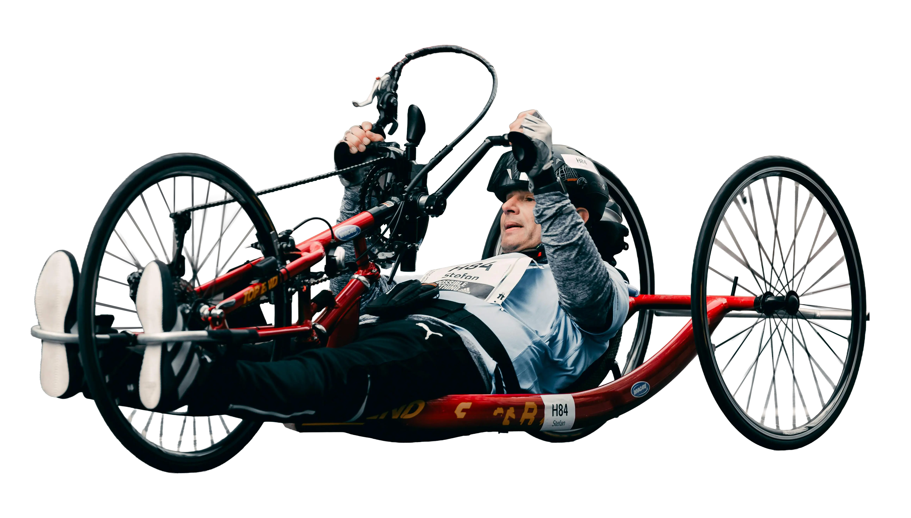

LDS est la seule solution du marché couvrant simultanément sport valide et handisport. Accessibilité vérifiée. Véhicules adaptés. Zéro mauvaise surprise.
Organiser un déplacement pour une équipe handisport, ce n'est pas la même chose qu'un déplacement ordinaire. LDS le sait parce qu'on l'a vécu.

L'accessibilité annoncée n'est pas toujours l'accessibilité réelle. LDS vérifie sur place ou par contact direct avec le prestataire avant chaque réservation.
Les accompagnateurs font partie du déplacement. LDS les intègre dans la logistique dès la phase de planification, pas en ajout de dernière minute.
Si un prestataire défaille à J-1 ou le jour J, LDS trouve une alternative en moins de 30 minutes. Pas d'improvisation, pas de club laissé sans solution.
Vérifiés PMR : rampes, ascenseurs, chambres adaptées, espaces communs. Pas de promesse catalogue.
Véhicules équipés pour fauteuils roulants, rampes électriques, fixations homologuées.
Entrées de plain-pied, espaces entre tables suffisants, sanitaires adaptés vérifiés.
"Enfin un prestataire qui comprend vraiment les réalités du handisport. Plus besoin de tout vérifier soi-même."
"On a testé l'offre Découverte sur un déplacement complexe avec 12 athlètes en fauteuil. Aucune mauvaise surprise. On a signé l'abonnement Premium dans la semaine."
En cas de défaillance d'un prestataire (hébergement, transport, restauration) dans les 24h précédant le départ ou le jour J, LDS s'engage à trouver une solution de substitution conforme en moins de 30 minutes ou à rembourser intégralement la prestation concernée.
Tester l'offre Découverte handisportParlez-nous de votre club. On s'occupe du reste.